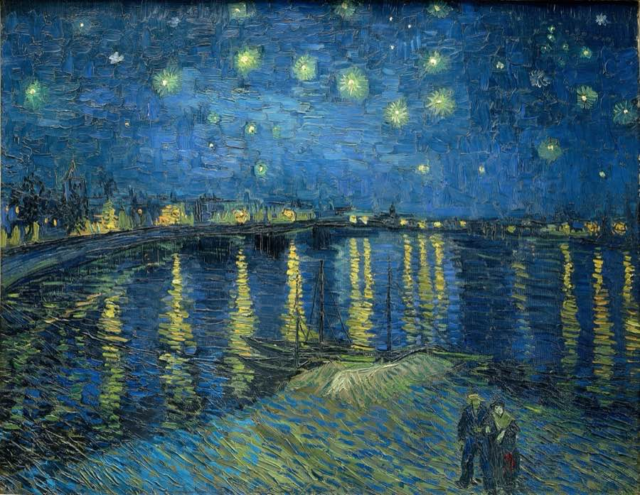

That doesn't stop me having a tremendous need for, shall I say the word — for religion — so I go outside at night to paint the stars…
Vincent van Gogh
Letter to Theo van Gogh, Arles, 29 September 1888
Humanity Moment of the Day